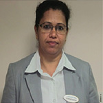
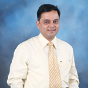
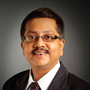

|
"I joined Columbia Asia as a young staff nurse in 2006 and since then it has
been a great journey of self-discovery, career progression and two breaks for
discovering the joys of motherhood! In Columbia Asia I have been exposed to
challenges that I once thought were beyond me. Having worked for other health
care companies, I can see a clear difference between how people are treated in
Columbia Asia and elsewhere. Upon reflection, I feel grateful towards all the people,
challenges and the opportunities that have come my way. I thrived! Columbia Asia has
lived its vision. It truly has a passion towards making people better! I have not only
seen patients health getting better but also relationships evolve and careers skyrocket!
Proud to be a part of this family."
Sija sanjay
Chief of Nursing services – Columbia Asia Mysore – India
Worked with Columbia Asia Hebbal from 2006- 2010, explored other opportunities to return to Columbia Asia with a Bang!
|
|---|
|  |
"Somebody once said that while looking for people to hire, you look for three qualities: Integrity, Intelligence, and Energy and if you don't have the first, the other two will kill you. At Columbia Asia I have realized that Integrity is a pillar of our existence and it’s visible in how my nursing staff takes care of all our patients, be it a mother and her new born in a premature delivery or a casualty patient in the ER. With all the ups & downs I have experienced , Integrity has become my personal value, I am glad to say that the unwavering support from the leadership team, ensuring remarkable patient care and continuous improvement in all the processes has kept me on my toes. It makes me look forward to a brand new productive day at work, Every day!"
Christeena Thankachan
Chief of Nursing services - Columbia Asia Hospital- Hebbal - India
Worked with Columbia Asia Hebbal from 2006- 2010, explored other opportunities to return to Columbia Asia with a Bang!
|
|  |
"There is something definitely unique and special working for Columbia Asia,
it does not have to do with the buildings, it does not have to be with the interiors,
it does not involve individual departments or individual staff or doctors, it does not
involve the treatment, it is not the fact that the staff or the management team members or
the promoters are being called by their first name, but it does involve combined and
systematic efforts of all the team members and much more which makes the atmosphere a
comfortable place to work and perform."
Mr. Babu Shenoy
Senior Finance Manager- Process & Training - Columbia Asia Hospitals -India Management Office
13 Years with the company
|
|  |
"It’s been a wonderful journey of 11years at Columbia Asia. The open and transparent
approach amongst the entire team, the opportunity to speak out loud and clear without
any inhibitions, taboo or hesitation has been the biggest motivator. Not to forget the
continuous appreciation of good work. My journey includes the culture of openness,
mutual respect, learning, teaching, and a lot of fun as well. I am happy to have
percolated this culture in to the entire team."
Arindham Banerjee
Senior General Manager- Columbia Asia Hospital – Salt Lake - India
11 Years with the company
|
 |
"My Job is blessed by God. It's been an incredible ride/Journey... It still feels like day one.
I am exhaling my gratitude to our esteemed organization and all my CAH colleagues for the
opportunity they have given me to work with them in these years. After joining the Company
I completed Masters in Radiology & Masters in Business Administration. I also got a lot of
support to learn, make mistakes, improvise & shine. I wouldn't be the person I am today without
Columbia Asia.Management team maintains a positive, productive relationship with all employees
and are very open and approachable. Without their support it would have not been possible to
complete 13 years of service."
Anto Ramesh Delvi
General Manager- Radiology Services – Columbia Asia Hospitals –India Management Office
13 Years with the company
|